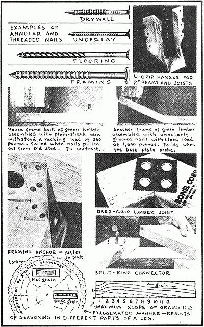
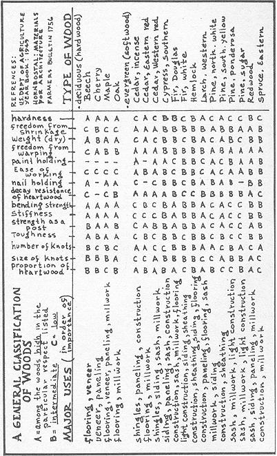
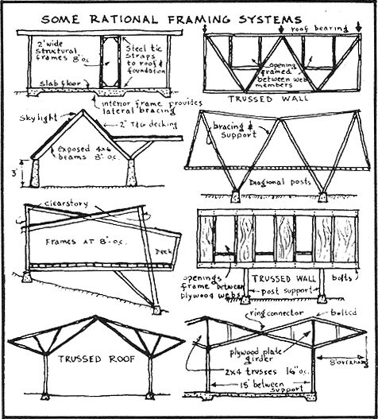
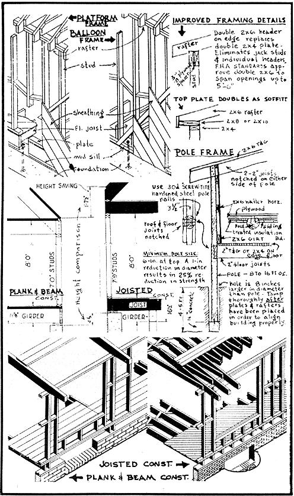
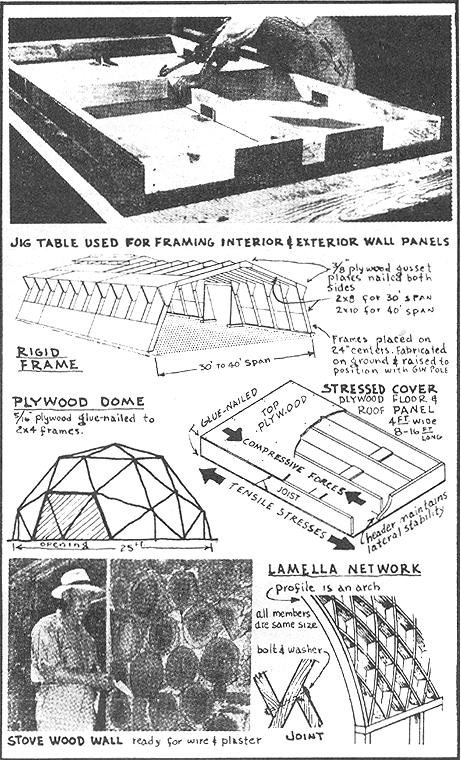

Realistic builders estimate actual carpentry costs at $6 per hour, allowing for the wasted time of workmen. Consider, for instance, the time it takes to drive a nail (perhaps bending it, pulling it, getting another, and so forth). Multiply this by the 65,000 wire nails that it ordinarily takes to hold up a small house! Or take into account the one-third saving in the costs of stud lumber and stud erection by spacing on 24-inch centers instead of on the code-enforced 16-inch centers. The University of Illinois Small Homes Council has found that a 40-cent stud actually costs $5 by the time it is "in place." Professor Albert Dietz of MIT recently stated: "Practically all small houses built today use too many studs. You can't say they are over-engineered, because they aren't engineered at all. They are just overbuilt." From an engineering standpoint, for the vertical loads imposed and for building spans of up to 32 feet, the 2 X 4 stud is adequate when spaced on 8-foot centers.
As for "in place" nailing costs of wood frame houses, it is known that threaded nails can replace twice as many cut flooring nails on a weight basis alone. This is without regard to the superior performance of the threaded nail; and the actual purchase-cost saving of 28% doesn't include corresponding labor-savings either. The permissible load for a single, plainshank nail, driven parallel to the wood grain, is from 80 to 90 pounds. A properly threaded nail of the same size will provide as much as ten times (800) this holding power. And a toothed-ring or split-ring connector will provide twenty times (up to 1900) the holding power of a threaded nail.
All the above is by way of introducing this chapter on wood with the fact that framing methods can be unduly complex, inefficient, and costly, or they can be simple, effective, and inexpensive. The material itself-wood-can be a perfect choice in performing a simple building task. Wood possesses high tensile and compressive strength, and the high strength-to-weight ratio of some woods gives relative immunity to vibration. We certainly should not discount the possibilities of building with wood merely because it is so grossly misused in current building practices. But before the owner-builder attempts to construct his house out of wood, he would do well to understand fully the structural properties and behavior characteristics of this versatile material. Builders too often choose a high-strength wood siding where what is really called for is a wood having good paint-receiving and weather resisting properties, and ability to stay in place. Joists are chosen for high bending strength, whereas stiffness is needed more than strength, and the concern should be for dryness, ability to stay in place, and minimum tendency toward shrinkage.
Wood can best be thought of as a reinforced plastic. Its main constituents (cellulose and lignin) are also the major ingredients of commercial plastic. Lignin is the adhesive which gives strength and rigidity to the wood. Cellulose is nature's "strong" material. It is made up of long-chain mole cules which line up with the long axis of the tree. This explains why wood splits along the grain, but must be chopped or sawed across the grain. It also explains why wood shrinks much less in length than in width when it dries. Moisture in the wood is not held inside the molecular chains, but rather between them. When evaporation occurs, the chains contract very little, but draw together in closer contact. Shrinkage is therefore lateral rather than longitudinal. While the tree is living both the cells and cell walls are filled with water, but as soon as the tree is felled, water within the cells ("free water") begins to evaporate. Shrinkage in the wood occurs only after the free water has fully evaporated.
Investigations at Virginia Polytechnic Institute have disclosed the fact that nail-holding powers decrease by three-fourths when driven into green or only partially seasoned lumber. During seasoning the wood shrinks away from the nail shank, thus reducing friction between the nail and the surrounding wood. It has also been found that moist wood in direct contact with a nail deteriorates as a result of chemical digestion of the cellulose due to the formation of iron oxides on the nail in the presence of wood acids. A certain unsheathed house-frame, assembled with green lumber, lost during seasoning more than one-third of its initial resistance to racking.
Besides the increase in strength and nail-holding power, air-dried or kiln-dried lumber holds paint and preservatives better and is less liable to attack from fungi and insects. It is fungi which cause decay in wood. Since wood will not rot when dry, the term "dry rot" actually refers to rot that leaves the wood, when dry, in a brown, often crumbly, condition that is suggestive of extreme dryness. Dry rot is caused by certain fungi which, by means of special water-conditioning strands, are able to carry water from the soil into the building.
Before the purchase of any major amount of lumber, the owner-builder should make a rough check as to moisture content. First select a half-dozen flat or plain-sawed boards from the lumber pile and cut a sample from each. The sample should measure 1 inch along the grain and be cut so as to include the entire width of the board. It should be cut at least 1 foot from the end of the board. Trim the sample so that it will measure exactly 6 inches in width, and place in a warm, dry place for 48 hours or longer. The 6 inch dimension is then measured to determine shrinkage. A shrinkage of over one-fourth inch shows the wood to be unsatisfactory for framing; a shrinkage of over one-eighth inch means that the wood is unsatisfactory for interior trim or finish.
As many advantages as there are to the use of seasoned lumber, its use will not be widely practiced so long as the cost remains relatively higher than green lumber. A person can maintain quality in construction and yet make substantial savings by buying less expensive (green) lumber, using threaded nails in erecting the framework, and then allowing the house shell to season prior to the application of interior finishing.
If the house frame is not sufficiently seasoned, "nail popping" will most certainly result after the installation of interior panels, for in the seasoning process wood shrinks as it dries out and swells as it absorbs moisture, while the nails penetrating the lumber cannot appreciably change in length. This results in a backing-out of the nail. Some carpenters use longer nails to prevent nail-popping, presumably figuring that greater holding power comes with longer length or heavier gauge. On the contrary, nail-popping has been found to be directly proportional to both lumber shrinkage and depth of nail shank penetration. A good rule to remember when buying nails is that the most effective nail is the shortest nail providing sufficient holding power, since it offers maximum resistance to nail-popping. Elaborate house framing studies by the Housing and Home Finance Agency have disclosed that nothing larger than the 3-inch-long tenpenny nail need be used in attaching two 2-inch members in a simple lap splice.
Another would-be solution of the popping problem is to use cement-coated, plain-shank nails. True, the withdrawal resistance is improved by three-fourths immediately after driving, but the withdrawal resistance of cement-coated nails still decreases as much as fifty percent during seasoning.
From the standpoint of nail-popping and green lumber framing alone, I have come to the opinion that the owner-builder can ill afford the use of plainshank common wire nails in his wood-framed house. The joining of wood has been for centuries a bottle-neck in utilizing the material to its fullest extent. In the past, contact areas of the jointed members had to be large, and this governed member-sizes more than the actual working stresses did. But today we have synthetic resin-adhesives and hardened, properly threaded nails to provide joints that are even stronger than most of the woods to be assembled. A special nail has been designed for every specific wood framing operation, be it cement-coated cut, etched, barbed, knurled, twisted, fluted or threaded
Threaded-type nails have remarkable holding qualities, as wood fibers penetrate the grooves made by the threads and this fishhook-like action keeps the nails in place. The slender, hardened, high carbon steel grooved nail is more than one gauge smaller in diameter than the common wire nail. Being more slender, it can be driven faster and with less energy. It is also less likely to split the wood, so that these nails can be spaced closet together and near the edge or end of the wood.
About one percent of the cost of a wood house is for nails. If threaded nails (which have twice the withdrawal resistance) were used throughout, the cost of a $5000 house would be increased by $20. But this additional expenditure would be more than offset by increased strength and performance; the unsheathed framing would provide from 4 to 6 times greater lateral thrust resistance. The wood floor would not squeak or spring, cup or buckle. Siding would not "creep" or "pop." With threaded nails, times greater holding power is given to asbestos shingles, fifty percent increased holding power to plaster board.
The problem of wood-joining has been but partly solved by the development of improved nailing. Two other improvements in fastening, since World War II, have contributed to making wood usable as a continuous material; first, the development of mechanical connectors, and second the invention of strong glues.
Metal plates and gussets are on the market for use in strengthening wood joints, particularly against a direct pull. They are made of heavy steel and have special designs of teeth stamped into them. Held in place merely by nails, they make one nail do the work of several. Bent, pre-drilled, steel U-grip hangers can often be used to advantage in locating and supporting 2 inch beams and joists. Framing anchors are also advantageously used at joints between plate and rafters, and where studs attach to sills. Where toenailing prevents sidewise movement, anchors give protection against uplift.
Shear-plates, toothed ring and split ring timber connectors are some of the best devices for use at joints that are fixed and permanently bolted. Toothed rings and shear plates are installed by forcing them into wood so that half the depth of the connector is embedded in each of the two lapping members. Split ring connectors are installed in pre-cut grooves, half of the ring in each of the two lapping members. A bolt passing through the lapping members and through the center of the ring completes this type of pin joint.
The gluing of wood may be compared to the welding of metal, as it makes a continuous member without cutting out any part of it. Gluing timbers is not a recent innovation, but with the development of plastics, much more durable and waterproof glues have been developed. Common casein glue is still one of the best, least expensive, and more available glues. It is especially suited to rough lumber where joints cannot be made completely tight. Only water is added to the dry casein powder, but, once it has set, it is completely waterproof.
As with the correct selection of joining devices, the proper selection of lumber is a prerequisite to successful framing and finishing. Being plentiful and therefore relatively economical in many parts of the world, wood is also easily worked-cut, drilled, or nailed-with simple tools. The choice among species, varieties, qualities, and grades of wood is sometimes staggering, and a proper choice must be made for each specific building operation. The following information is intended to assist in making proper choices (classification is made relative only to the more important structural and behavioral characteristics).
Hardness in wood is the property that makes the surface difficult to dent, scratch, or cut. We look for hardness in woods to be used for flooring and furniture making, but avoid this property where frequent cutting and nailing is required, since hard wood is more likely to split in nailing and is generally more difficult to handle, as well as usually being more expensive.
Weight is a reliable index of the structural properties of wood. That is, a heavy piece of dry wood is stronger than one lighter in weight.
Shrinking and swelling take place in wood as it absorbs moisture and then dries out. About one-half of the shrinkage is "taken out" of wood through air drying and about two-thirds through kiln drying. One fact which is especially important to know before selecting flooring boards is that a board will shrink about one-half as much at right angles to the annual rings (edge-grained). Edge-grained wood of a species having high shrinkage will prove as satisfactory as flat-grained wood of a kind with inherently lower shrinkage.
Warping of wood is closely allied with shrinkage. Lumber that is cross-grained or that is cut from near the central core of the tree tends to warp when it shrinks. Quarter-sawed dry wood warps the least.
Paint-holding depends upon a number of factors, such as the kind of paint and the circumstances of its application, as well as the type of wood. But, in general, paint holds better on edge-grained wood than on flat-sawed. And the bark side of flat-grained boards is more satisfactory to paint than the pith side.
Nail-holding properties are usually greater in the denser and harder woods, but (already mentioned) nails eventually lose about three-fourths of their full holding power when driven into wet wood. Blunt-pointed nails have less tendency to split wood than do sharp-pointed ones.
Decay in wood is caused by moisture and changes in moisture content. Wood is inherently vulnerable to moist and stagnant air; it is susceptible to attack by fungi and insects. Moisture in wood is also directly responsible for plaster cracks, air leakage, pulling of fastenings, vibration of floors, pealing of paint, and the warping and sticking of doors and windows. It is a wise owner-builder who insists on dry lumber, especially for interior use (for the exterior use of green lumber, consider again my pre vious comments in this chapter on its use).
Bending strength is a measure of the horizontal load-carrying capacity of wood. Rafters, girders, and floor joists all require high bending strengths. A small increase in the height or depth of a beam (or horizontal member) produces a much greater increase in bending strength than it does in volume, and an increase in the width of a beam increases the volume and bending strength proportionally. That is, an increase of 1 inch in the height of a 10 inch beam will increase its volume 10%, whereas the bending strength of the same beam set on edge is increased a good 21%. But an increase of 1 inch in the width of a beam 10 inches wide will increase both volume and bending strength 10%, equally. For maximum bending strength the slope of wood grain should not exceed an average of 1 to 12. Both the elastic limit and the ultimate strength of wood are higher under short-time loading than under long-time loading, so that wood is able to withstand considerable overloads for short periods or smaller overloads for longer periods.
Stiffness is a measure of the resistance to bending or deflection under a load. A 10 inch joist has only about one-fourth more wood in it than an 8 inch joist, but set on edge in a building it is more than twice as stiff. In studding too, stiffness is more important than actual breaking strength, as it is deflection that must be reduced to a minimum in order to avoid plaster-cracks in ceilings and vibrations in floors.
Toughness is a measure of the capacity of wood to withstand suddenly applied loads. Woods high in shock resistance are adapted to withstand repeated shocks, jars, jolts, and blows. They give more warning of failure than do non-tough woods, an important factor in beams and girders.
Wear resistance is higher with edge-grained wood than with flat-grained; better on the sap-side than on the heart-side; more even with clear wood than with wood containing knots.
Knowing the physical properties and the methods of attaching wood members is only the first or preliminary thought-stage in building a house of wood. After this basic understanding we must choose wisely some system of wood construction, and the structural system that may be used depends, in turn, on a host of factors-from general engineering principles affecting roof and wall and floor design to such commonplace considerations as available labor skills and equipment. These are the factors which will be considered in the next chapter, on Wood Frame Structure.
BIBLIOGRAPHY (books listed in order of importance)
Laboratory Findings on Holding Power of Nails: Stern, Virginia Polytechnic Institute.
Selection of Lumber: U. S. Dept. of Agriculture, Farmers Bulletin 1756.
Trees: Agricultural Yearbook 1949, U. S. Dept. of Agriculture.
Materials for Architecture: Caleb Hornbostel, Reinhold, 1961.
Wood Construction: National Committee on Wood Utilization Washington, D.C
Why on earth do home builders continue to ignore the more rational approaches to structure? They ignore the "skeleton of the house" and go all-out for affectation and trimmings. Take frame houses, for instance. Conventional stud-walls are inefficient; while overdesigned they retain weak joints; both erection labor and materials are wasted; they offer maximum fire hazard; erection is slow and thus vulnerable to bad weather.
Extensive studies into the structural engineering of houses have been made by various private and government agencies. One government report, Strength of Houses, maintains:
Houses have never been designed like engineering structures. Since prehistoric times, safe house construction has been found by the tedious and wasteful method of trial and error. If the modern research that has proven so successful in the solution of other problems had been applied to houses, not only would homes be more satisfactory as dwellings but, much more important, the cost would be much less. This would be an outstanding contribution to the problem of providing acceptable houses for the low-income groups in this country.
Note the lack of engineering approach in house-building practice today. It is customary to assume that walls, floor and roof contribute nothing to the strength of the building! All loads are supposed to be carried independently by the frame. And all stresses and loads are analyzed separate ly for each structural component! Design-loads are calculated for compression, traverse, impact, and racking on walls, floor, and roof. Dead loads (gravity weight of construction) are added to live loads (objects or persons on the floor). To these the builder must add calculated wind, water, and snow loads. Then, to complicate matters more, the builder must be acquainted with the strength of various materials and fastening methods; the modules of elasticity, stress, shear, and deflection for each independent member, as well as for the effective cross-sectional area, grade, and species of each variety of material used!
In the engineering approach the usual building practice of analyzing each structural component separately is replaced by a consideration of integrated structural effect; and a deliberate attempt is made to have the foundation and roof function as extensions of the wall-to eliminate the separation of function between wall and roof, floor and foundation.
A structural system has only four basic forces to overcome; compression, tension, bending, and shear. Bending occurs when a weight or force is placed at a distance from a support. Shear, in mechanics, means a thrust outward at right angles to the stress. With these basic structural reactions in mind, various framing systems can be evaluated and compared in relation to strength per unit of material and of time expended in fabrication. Wood was inefficiently used, of course, by early settlers in building cabins of massive logs cut from trees. Later, with the advent of power-driven sawmills, wood-frames having lighter members were developed and less wood was required. The post-and-girder structural system provided a transition between the log cabin and the currently employed vertical-stud-wall system of construction, which in some ways, however, marks a decline from the post-and-girder design.
The Balloon Frame which employs vertical studs in an old-fashioned box-type house is still often used in a 2-story building. With ceiling joists supported on a ribband board let into the studs, it becomes possible to extend the studs unbroken to full building height. Platform-framing has al most entirely replaced balloon-framing on single story structures, especially a platform consisting of subflooring over joists supporting a stud wall. The wall, in turn, carries the roof-and-ceiling construction. Platform-framing lends itself especially well to panelized and tilt-up construction. In the tilt-up system the wall may be framed to any degree desirable on the ground and then tilted upward into place, braced, and fastened.
A major disadvantage of stud-wall construction is that it is prone to fire, since the rate of burning depends on the ratio of surface area to volume of timber. The use of many wood members makes stud construction fast-burning. The type of wood-structure that uses heavier and fewer pieces is better from a fire safety standpoint.
The Plank and Beam structural system is becoming more and more popular with home builders. It has many advantages, including resistance to fire. The National Lumber Manufacturers Association made a detailed study comparing relative costs of plank-and-beam construction with conventional construction, since there are fewer pieces to handle and the members used combine structural function with finish.
Beams covered with standard 2-inch decking may be spaced as far as 8 feet apart. A structural feature worth mentioning here is that, for the same evenly distributed load, the plank that is continuous over two spans is nearly two and one-half times as stiff (or rigid) as the plank that extends over a single span.
Pole-type wall construction is logical in conjunction with plank-and-beam work. Barked poles, penta-treated under pressure, have a guaranteed life of from 50 to 75 years. Spaced on 8-foot centers, poles serve the triple function of foundation support, bracing and framework to which floor, wall, and roof members are fastened. Labor, time and materials are all saved in pole framing. Since lateral girts replace wall studs, and since fewer and longer pieces of lumber are used, the actual framework can be erected rapidly (a bad weather advantage, especially, as the building can be quickly placed under cover). Four-foot-deep hand-dug postholes form the extent of pole-frame excavation, which makes this construction adaptable to hillside building sites. By placing a pole four feet in the ground (or five feet if you need double rigidity), a rigid or bracing effect is achieved. The same pole placed on a pier or foundation above ground reacts as a hinge and does not furnish rigidity to the structure. The lateral stability of conventional construction has to come by second intention, interior partitions or from the end walls of the building. In this sense conventional framing is not structurally complete, since a direct lateral force, such as strong wind, might fell the building if it were not for the bracing supplied by the nonframing members added later.
The Rigid Frame is another structurally complete framing system. Like pole framing, however, it is seldom employed in residential construction. The rigid frame is made transversely stable by designing the wall-to-roof joints to remain rigid, whereas the pole-frame system supplies rigidity at the base of the support columns.
The surest method of achieving rigidity in a joint is through gluenailed gusset plates-that is, a member (usually plywood) which is fastened to one or both sides of an angled connection. A rigid frame is in effect an arch, and as such it develops considerable outward thrust at the base, which then makes a well-designed foundation mandatory. Rigid frames have an added labor-saving advantage when they can be pre-assembled (prefabricated) on the ground and then tilted into position. In any kind of framing operation it is far more efficient to work on the ground than in the air. (Simple jig tables, like the one shown below, or contraptions can be used to advantage against errors and misfits where complex assemblies are indicated.) It is the cutting, fitting, and waste inherent in using extremely small components that inflate framing construction costs.
In pre-assembling wall units the owner-builder may capitalize on some of the many money-saving building techniques developed by the highly competitive pre-fabricated home industry. The Lu-Re-Co panel system, for instance, is fully adaptable, and offers a 30% labor and 10% framing saving over standard construction. Both interior and exterior panels, measuring 4 feet by 8 feet or less (depending upon window and door sizes), are framed in a special jib, and each panel (including sheathing, sid ing, window, door and even a prime coat of paint) is assembled on the ground.
Stressed Cover panels offer all the advantages of modern prefabricated panel construction along with greatly improved structural qualities. This type of panel consists of a frame with a continuous plywood skin-glue-nailed on each side of the frame. As the loads are partly carried by the skin, the framing members can be lighter and fewer in number than in the standard framing type of panel. Strength and rigidity are both increased by this combination of frame and skin.
A stressed cover panel is similar in structural action to a wide-flange steel beam; the top face carries compressive stress and the bottom face tension. The joist acts as the steel web. High shearing stresses that exist between the plywood skin and framing members are transmitted via glue-nailed joints. There are advantages of using plywood over ordinary laminated wood; the layers of wood are placed with their gains running at right angles to each other, thus eliminating shrinkage and increasing strength.
The 1959 National Association of Home Builders Research House at Knoxville has thin hardboard stressed cover panels on exterior and interior walls and on floor, roof, and ceiling. All panels are 8 feet high and vary in width from 1 to 4 feet, making this system completely modular in planning and details.
If maximum benefit from panelized construction is to be gained, all components must conform to a common unit of measurement, called a module. This will permit efficient assembly and eliminate all waste, fitting, and cutting operations on the job.
From the approach of ultimate structural efficiency, the stressed cover principle shows how ridiculous the framework- and -covering, studs- and -sheathing approach to structure really is. The skin-and-bones concept of structure is both wasteful and inefficient. Studs, rafters, and joists are first erected, and sheathing then applied. The sheathing itself is a structural liability, a dead weight, a parasitic covering.
The greatest structural potential in wood construction today seems to lie in the use of Curved Skin enclosures. The principle of curved skin is based on the engineering concept that all material in a structure should contribute directly to its strength. It is a concept of integral structure which offers exciting prospects to any wood-orientated owner-builder.
The Lamella system, first developed in Germany in 1923, takes full advantage of the high strength of compression in wood parallel to the grain. Loads are spread evenly over the entire network and are resisted by boltties at each diamond-shaped diagonal. Lamella is essentially an arch composed of many short pieces of wood. Buckminster Fuller, too, employs a small-component triangulated system for the enclosure of his hemispherical domes of space. The Fuller dome develops an extremely high structural efficiency and strength-to-weight ratio.
Some builders have gone back to the log cabin design and developed a Solid Bearing line, with good results. A modern form of "log cabin" construction consists of 4 by 8 inch tongue and groove sawn logs. Some varieties use 1/2-inch steel rods spaced every four feet, through which the logs are threaded. Another log manufacturer (National Log Construction Co., Thompson Falls, Mont.) has patented a system for boring out the heart of the entire log and forming a tongue and groove weatherproofing. The "air lock" cavity allows the log to season evenly, thereby minimizing cracking and checking.
Solid-bearing log members can be laid vertically as well as horizontally. Square-edge 1-inch thick boards, with exterior battens and interior horizontal 1 inch ties, were commonly used in California forty years ago. More recently, 2 inch thick tongue and groove planking is nailed together vertically, sometimes with the planks staggered. A more striking resemblance to the palisade of pioneer days has been achieved by some inventive home builders, using peeled cedar posts vertically.
Early settlers in the Ottawa Valley discovered a method of building with wood which requires minimum labor and material cost. Dried cedar firewood logs, ten inches long and averaging five inches in diameter, are bedded in cement as though stacking firewood neatly along a wall. The outside and inside of the walls are then cement-plastered. A builder in Florida has constructed a number of such "stove wood" houses, using 7-inch thick palm tree sections. His four-room bungalow requires only $28 worth of palm logs.
The range of wood structures-between cemented stove wood at one end and stress-skin arches at the other-gives the wood-oriented ownerbuilder a wide choice.
BIBLIOGRAPHY (books listed in order of importance)
Plank and Beam System: House and Home Finance Agency, Washington, D. C.
Strength of Houses: Building Materials and Structures report 109, Bureau of Standards, Washington, D.C.
Material and Labor Analysis-House Framing Systems: House and Home Finance Agency, Washington, D. C.
Small Homes Council, University of Illinois, Urbana, 111.
Lumber Dealers Research Council, Washington, D. C.
Doane Agricultural Service, 5144 Delmar, St. Louis, Mo. (pole-frame building information).
|
 General Classification of Wood |
 |
 |
|
 |
 |
|